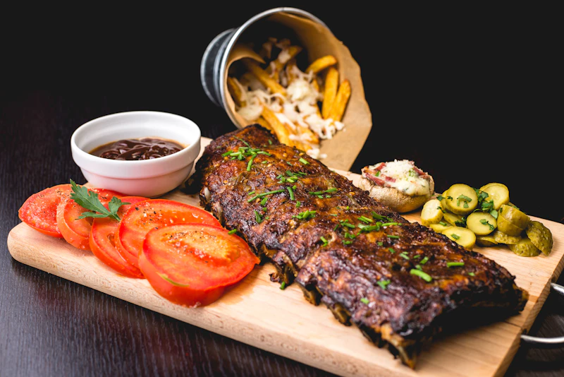

Guide · Staffing & retention
Host stand burnout: staffing solutions that actually work
The host stand turns over faster than any spot in the restaurant. Here's how to keep your hosts — and your Saturday night book — intact.
Updated August 13, 2026 · 6 min read
Guests know the host stand as the smiling face at the door. Behind the scenes, it's the hardest job in the building. One person is expected to be a greeter, a phone operator, a waitlist manager, a seating strategist, and a complaints department — simultaneously, at the busiest possible moments.
That's why host turnover is routinely the highest of any front-of-house role, and why every solution below works only if it removes work from the stand rather than adding to it.
What's actually burning hosts out
- The phone + the door in the same second. A guest needs seating guidance while a reservation is ringing — split attention, every night.
- Feeling blamed for others' problems. Wait times, seat-name mixups, and full restaurants land on the host's shoulders first.
- Endless low-value questions. "What time do you close? Do you have the menu? Is there parking?" — dozens of times a shift, each indistinguishable from a booking.
- No breaks when it rains, no cover when it pours. The stand is a one-person island during exactly the hours it needs three.
Solution 1 — Take the phone off the host stand
The single highest-leverage fix. Reservations and info calls that currently pull your host away from the door are exactly what an AI phone receptionist does best — answer instantly, book into OpenTable or Resy, text the menu, and only escalate the calls that genuinely need a human.
The host's reaction
"Our hosts were sprinting from the door to the phone all night. Now they stay at the door, and TableTalk books while they seat the floor. The stress is gone and Saturday revenue is up."
— Marcus Bennett, owner, The Copper Spoon
Solution 2 — Two-host coverage at peak
If tables can be filled by waitlist software, treat the host stand like the floor: schedule a second, shorter shift for 6–8 PM on your busiest nights. One host owns the door; the other owns the phone and waitlist. Cheap relative to a single host running out the door permanently.
Solution 3 — Rotate the stand
No one should spend a whole weekend at the host stand. Rotate hosts and floor staff through the position in 2–3 hour blocks. It cross-trains your team, spreads the load, and shows everyone the job isn't beneath anyone.
Solution 4 — Give the host tools, not lectures
A working waitlist system, a floor plan they control, and a phone they don't have to answer do more for morale than any incentive. Tools that remove friction — including AI answering the routine calls — are the retention play that scales.
The cost of doing nothing
Replacing a host costs more than everyone assumes: recruiting, training, and the weeks of coverage gaps where calls go unanswered and tables sit empty. Against that, an AI phone receptionist at a flat $50/month is almost unbelievably cheap insurance for the single most stressful job in your building.
Give your host the door back.
AI handles the phone. Your host handles the floor. 7-day free trial, no credit card.
Start your free trialQuick answers
Why do host stand employees burn out so fast?
Hosts juggle the door, the phone, the waitlist, and guest complaints at the same time, often as the lowest-paid front-of-house role. The overlapping demands during rushes create the highest churn of any position.
What is the cheapest way to relieve host stand pressure?
Removing the phone from the host's plate is usually the highest-leverage, lowest-cost fix. An AI phone receptionist answers calls, books reservations, and texts menus — freeing the host to stay at the door.
Does that mean replacing the host entirely?
No. TableTalk handles overflow and routine calls so hosts stay on the floor where they belong. Guests who need a human still transfer straight through with a call summary.